在DosBox上安装windows3.2
目录
安装DOS6.22
下载DOS启动镜像
下载并解压DOS安装的软盘镜像
你可以从 这里 下载安装镜像
wget http://w1.downbk.com:806/1302/dos622_bkill.com.zip
解压这个zip文件
unzip dos622_bkill.com.zip
这会在本地路径下生成一个 dos622 的路径，软件镜像就在这个目录下
cd dos622
ls
比克尔.url dos1.img dos2.img dos3.img
创建一个磁盘镜像作为C盘
我们将会将这个磁盘镜像挂载为C盘，并在上面安装操作系统
创建镜像文件
这个磁盘文件不需要太大，256M已经算是很大了:
dd if=/dev/zero of=~/Dosbox/Windows3.2.img bs=1M count=256
打开 ~/.dosbox/dosbox-0.74.conf 在 [autoexec] 节下添加如下内容
mount Y: ~/Downloads/dos622 #将dos安装目录挂载成Y盘 Y: #将当前目录切换到Y盘 imgmount 2 "~/Dosbox/Windows3.2.img" -size 512,63,16,520 -t hdd -fs none boot dos1.img dos2.img dos3.img -l a
其中有几点需要说明一下：
~/.dosbox/dosbox-0.74.conf是dosbox7.4的默认配置文件，其他版本的dosbox配置文件可能是~/.dosbox/DOSBox.conf- DOSBOX配置文件中的
autoexec节下的内容类似于dos系统中的C:\AUTOEXEC.BAT, 即该部分内容会在系统启动时自动运行 mount 命令将一个主机目录仿真成DOSBox中的一个虚拟磁盘。
mount的语法为:
MOUNT [Drive-Letter] [Local-Directory]
需要注意的是，主机目录仿真为虚拟磁盘后，在DOSBOX外对目录进行的操作并不会实时刷新DOSBOX内的虚拟磁盘！
此外，使用mount命令也可以卸载虚拟磁盘，语法为
MOUNT -u [Drive-Letter]
IMGMOUNT 命令将镜像文件挂载为DOSBox中的虚拟磁盘
IMGMOUNT 命令的语法为:
IMGMOUNT DRIVE [imagefile] -t [image_type] -fs [image_format] -size [sectorsbytesize, sectorsperhead, heads, cylinders -u DRIVE]
其中配置:
DRIVE为2意思是该挂载的磁盘为master盘，与后面的fs none一起用-t hdd表示挂载的镜像文件为硬盘，这种情况下必须指明合适的CHS参数.-size 512,63,16,520指定磁盘的CHS参数，其中前三个参数一般固定为512,63,16,而第四个参数的计算方法是用硬盘容量除与前三个参数的积，即256*1024*1024/512/63/16=520-fs none表示该磁盘需要被格式化或者会被BOOT命令引导，这种情况下DRIVE必须为数字2或者3,其中2表示master，3表示slaverboot命令指定从哪个镜像文件中引导系统
boot命令的语法为
BOOT [diskimg1.img diskimg2.img .. diskimgN.img] [-l driveletter]
其中
diskimgN.img指定了从哪个镜像文件中开始引导，它可以一次性接受多个镜像文件，表示引导后挂载多个镜像。 即此时diskimg1.img挂载成了A盘，diskimg2.img挂载成了B盘...你可以通过
Ctrl-F4来切换这些镜像,这时diskimg2.img挂载成了A盘，diskimg3.img挂载成了B盘...-l driveletter则指明了从哪个盘进行引导
安装dos6.22
启动dosbox，开始安装dos6.22
dosbox
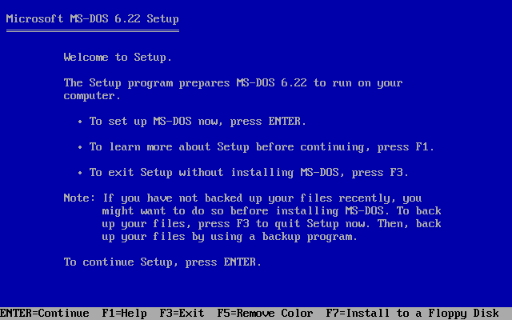
安装过程中可能会提示需要重启一下，直接重新运行一次 dosbox 即可
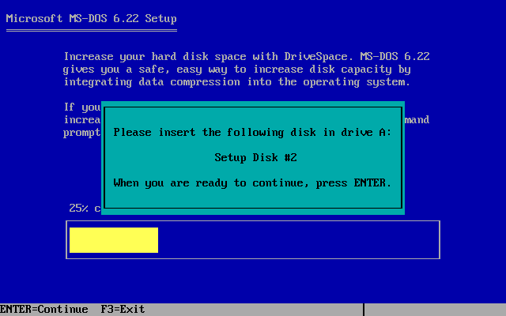
若安装出现换盘的情况，则按下 Ctrl-F4 进行换盘
更改配置，从硬盘镜像引导系统
更改DOSBOX的配置文件，将 [autoexec] 中的配置修改为
imgmount C "~/Dosbox/Windows3.2.img" -size 512,63,16,520 -t hdd -fs fat boot -l c
安装Windows3.2
下载Windows3.2安装文件
我们可以从 这里 下载Windows3.2的安装文件:
wget "http://sf.jb51.net:81/201312/tools/windows3.2(jb51.net).rar" -O ~/Downloads/windows3.2/windows3.2.rar解压这个rar文件
cd ~/Downloads/windows3.2 rar x -c- -idq windows3.2.rar这会产生多个
DISKN的目录ls
服务器软件.url 去脚本之家看看.url DISK1 DISK2 DISK3 DISK4 DISK5 DISK6 DISK7 DISK8 DISK9 DISKA DISKB DISKC DISKD DISKE windows3.2.rar
挂载 DOSBOX 的硬盘镜像文件，将 windows 安装文件拷贝进去
创建一个loop设备用来表示DOSBOX的硬盘镜像文件
sudo losetup -Pf --show /home/lujun9972/Dosbox/Windows3.2.img
/dev/loop1
其中
-P表示内核在loop设备生成后扫描其中的分区表，-f参数表示自动寻找第一个未使用的loop设备号挂载loop设备
sudo mount -t vfat -o uid=1000 /dev/loop1p1 /mnt为了方便，我们可以将所有的
DISKN中的内容放到同一个目录中mkdir -p /mnt/wininst for n in DISK*;do cp $n/* /mnt/wininst done
这就将windows安装目录拷入DOSBOX的硬盘镜像文件中了
卸载DOS的硬盘镜像文件
sudo umount /mnt sudo losetup -d /dev/loop1
安装Windows3.2
启动dosbox
dosbox

运行windows3.2的安装文件
在dos中运行
cd wininst setup
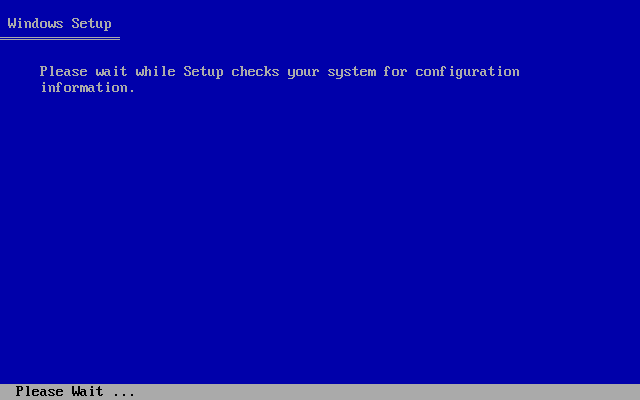
需要说明的是，我在安装时，安装到一般DOSBOX会报错 " DRC64:Unhandled memory reference",然后退出。 需要在配置文件中将
core=auto改成core=normal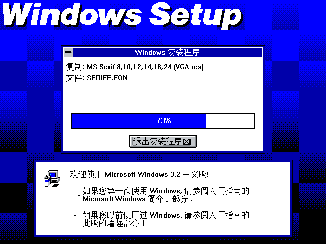
设置启动DOSBOX自动启动windows
只需要在 c:\autoexec.bat 最后添加 win 就行了
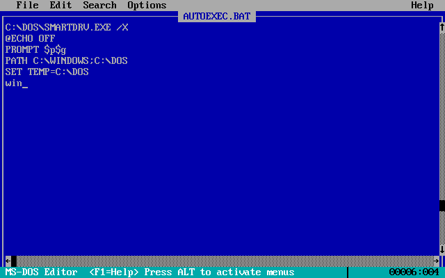
安装显卡驱动
挂载DOSBOX硬盘镜像文件
sudo losetup -Pf --show /home/lujun9972/Dosbox/Windows3.2.img
/dev/loop0
sudo mount -t vfat -o uid=1000 /dev/loop0p1 /mnt下载S3驱动
curl http://www.sierrahelp.com/Files/3x_Files/S3DRIVERS.ZIP -o /mnt/S3DRIVERS.ZIP
解压S3驱动
cd /mnt unzip S3DRIVERS.ZIP -d S3DRIVERSArchive: S3DRIVERS.ZIP inflating: S3DRIVERS/8514FIX.FO_ inflating: S3DRIVERS/8514OEM.FO_ inflating: S3DRIVERS/8514SYS.FO_ inflating: S3DRIVERS/CGA40850.FON inflating: S3DRIVERS/CGA40WOA.FON inflating: S3DRIVERS/CGA80850.FON inflating: S3DRIVERS/CGA80WOA.FON inflating: S3DRIVERS/COURE.FON inflating: S3DRIVERS/COURF.FON inflating: S3DRIVERS/EGA40850.FON inflating: S3DRIVERS/EGA40WOA.FON inflating: S3DRIVERS/EGA80850.FON inflating: S3DRIVERS/EGA80WOA.FON inflating: S3DRIVERS/EGAMONO.LGO inflating: S3DRIVERS/EGAMONO.RLE inflating: S3DRIVERS/HELVE.FON inflating: S3DRIVERS/HELVF.FON inflating: S3DRIVERS/MODERN.FON inflating: S3DRIVERS/OEMSETUP.INF inflating: S3DRIVERS/OEMSETUP.SAV inflating: S3DRIVERS/RESTORE.TXT inflating: S3DRIVERS/ROMAN.FON inflating: S3DRIVERS/S3911GRB.3GR inflating: S3DRIVERS/S3VGA.2GR inflating: S3DRIVERS/S3VGA.3GR inflating: S3DRIVERS/S3VSND.DRV inflating: S3DRIVERS/S3VSND24.DRV inflating: S3DRIVERS/S3VSND4.DRV inflating: S3DRIVERS/SCRIPT.FON inflating: S3DRIVERS/SERIFE.FON inflating: S3DRIVERS/SERIFF.FON inflating: S3DRIVERS/SMALLE.FON inflating: S3DRIVERS/SMALLF.FON inflating: S3DRIVERS/SSERIFE.FON inflating: S3DRIVERS/SSERIFF.FON inflating: S3DRIVERS/SYMBOLE.FON inflating: S3DRIVERS/SYMBOLF.FON inflating: S3DRIVERS/TMSRE.FON inflating: S3DRIVERS/TMSRF.FON inflating: S3DRIVERS/VDDS3.386 inflating: S3DRIVERS/VDDS3VSN.386 extracting: S3DRIVERS/VERSION inflating: S3DRIVERS/VGACOLOR.2GR inflating: S3DRIVERS/VGAFIX.FON inflating: S3DRIVERS/VGALOGO.LGO inflating: S3DRIVERS/VGALOGO.RLE inflating: S3DRIVERS/VGAOEM.FON inflating: S3DRIVERS/VGASYS.FON
修改DOSBOX配置，将
[dosbox]节下的machine值改成svga_s3machine=svga_s3启动
dosbox, 安装S3驱动dosbox cd c:\widows setup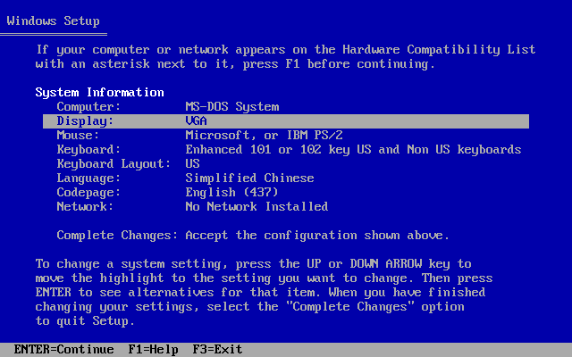
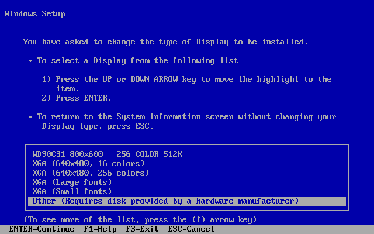
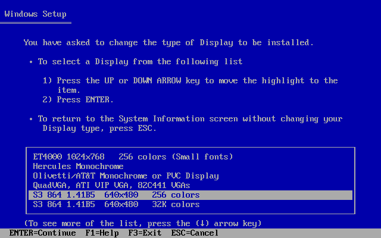
设置声音
DOSBOX模拟了一个 Sound Blaster 接口，但是在Windows上需要经过设置才能通过它来发出声音。
在Windows中选择 "主群组" 中的 "控制面板" -> "驱动程序" -> "新增" -> "Creative Labs Sound Blaster 1.0" -> 输入windows安装文件的路径 ->选择sbbase和irq
其中 sbbase 和 irq 的值，可以在DOSBOX配置参数中的 [sblaster] 节中查到
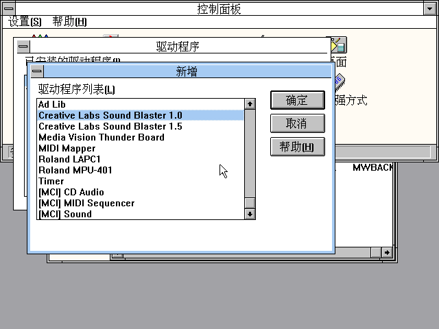
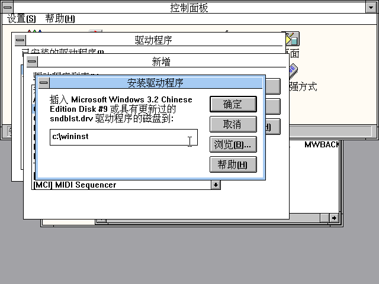
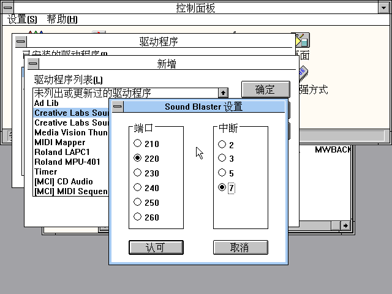